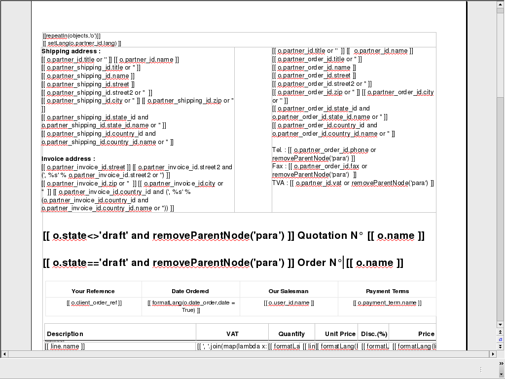
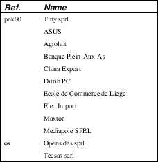

Reports
There are mainly three types of reports in OpenERP:
- OpenOffice.org reports
- RML reports
- custom reports (based on PostgreSQL views and displayed within the interface)
This chapter mainly describes OpenOffice.org reports, and then XSL:RML reports. Custom reports are described in section Advanced Modeling - Reporting With PostgreSQL Views.
OpenOffice.org reports
The document flow
OpenOffice.org reports are the most commonly used report formats. OpenOffice.org Writer is used (in combination with [[1]]) to generate a RML template, which in turn is used to generate a pdf printable report.

The internal process

The .SXW template file
- We use a .SXW file for the template, which is the OpenOffice 1.0 format. The template includes expressions in brackets or OpenOffice fields to point where the data from the OpenERP server will be filled in. This document is only used for developers, as a help-tool to easily generate the .RML file. OpenERP does not need this .SXW file to print reports.
The .RML template
- We generate a .RML file from the .SXW file using Open SXW2RML. A .RML file is a XML format that represent a .PDF document. It can be converted to a .PDF after. We use RML for more easy processing: XML syntax seems to be more common than PDF syntax.
The report engine
- The Open Report Engine process the .RML file inserting data from the database at each expression.
in the .RML file will be replaced by the name of the country of the partner of the printed invoice. This report engine produce the same .RML file where all expressions have been replaced by real data.
The final document
- Finally the .RML file is converted to PDF or HTML as needed, using OpenReport's scripts.
Creating a SXW
You can design reports using OpenOffice. Here, as an example, is the file server/bin/addons/sale/report/order.sxw.

Dynamic content in OpenOffice reports
Dynamic content
In the .SXW/.RML reports, you can put some Python code that accesses the OpenERP objects in brackets. The context of the code (the variable's values you can use) is the following:
Available variables
Here are Python objects/variables available:
- objects : the list of objects to be printed (invoices for example).
- data : comes from the wizard
- time : the Python time module (see Python documentation for more information).
- user : the user object launching the report.
Available functions
Here are Python functions you can use:
- setLang('fr') : change the language used in automated translation (fields...).
- repeatIn(list, varname[, tagname]) : repeat the current part of the template (whole document, current section, current row in the table) for each object in the list. Use varname in the template's tags. Since versions 4.1.X, you can use an optional third argument that is the name of the .RML tag you want to loop on.
- setTag('para','xpre') : replace the enclosing RML tag (usually 'para') with an other (xpre is a preformatted paragraph), in the (converted from sxw)rml document (?)
- removeParentNode('tr') : removes the parent node of type 'tr', this parameter is usually used together with a conditional (see examples below)
Example of useful tags:
- [[ repeatIn(objects,'o') ]] : Loop on each objects selected for the print
- [[ repeatIn(o.invoice_line,'l') ]] : Loop on every line
- [[ repeatIn(o.invoice_line,'l', 'td') ]] : Loop on every line and make a new table cell for each line.
- [[ (o.prop=='draft')and 'YES' or 'NO' ]] : Print YES or NO according the field 'prop'
- [[ round(o.quantity * o.price * 0.9, 2) ]] : Operations are OK.
- [[ '%07d' % int(o.number) ]] : Number formatting
- [[ reduce(lambda x, obj: x+obj.qty , list , 0 ) ]] : Total qty of list (try "objects" as list)
- [[ user.name ]] : user name
- [[ setLang(o.partner_id.lang) ]] : Localized printings
- [[ time.strftime('%d/%m/%Y') ]] : Show the time in format=dd/MM/YYYY, check python doc for more about "%d", ...
- [[ time.strftime(time.ctime()[0:10]) ]] or [[ time.strftime(time.ctime()[-4:]) ]] : Prints only date.
- [[ time.ctime() ]] : Prints the actual date & time
- [[ time.ctime().split()[3] ]] : Prints only time
- [[ o.type in ['in_invoice', 'out_invoice'] and 'Invoice' or removeParentNode('tr') ]] : If the type is 'in_invoice' or 'out_invoice' then the word 'Invoice' is printed, if it's neither the first node above it of type 'tr' will be removed.
One more interesting tag: if you want to print out the creator of an entry (create_uid) or the last one who wrote on an entry (write_uid) you have to add something like this to the class your report refers to:
'create_uid': fields.many2one('res.users', 'User', readonly=1)
and then in your report it's like this to print out the corresponding name:
o.create_uid.name
Sometimes you might want to print out something only if a certain condition is met. You can construct it with the python logical operators "not", "and" and "or". Because every object in python has a logical value (TRUE or FALSE) you can construct something like this:
(o.prop=='draft') and 'YES' or 'NO' #prints YES or NO
It works like this: and is higher priority than or, so that expression is equivalent to this one:
((o.prop=='draft') and 'YES') or 'NO'
If o.prop is 'draft', then it evaluates like this:
1. o.prop == 'draft' is True.
2. True and 'YES' is 'YES'. Because the left side is a "true" value, the and expression evaluates to the right side.
3. 'YES' or 'NO' is 'YES'. Because the left side is a "true" value, the or expression short cuts and ignores the right side. It evaluates to the left side.
If o.prop is something else like 'confirm', then it evaluates like this:
: 1. o.prop == 'draft' is False. 2. False and 'YES' is False. Because the left side is a "false" value, the and expression short cuts and ignores the right side. It evaluates to the left side. 3. False or 'NO' is 'NO'. Because the left side is a "false" value, the or expression evaluates to the right side.
One can use very complex structures. To learn more, see the python manuals section on Python's boolean operators.
python function "filter" can... filter: try something like:
repeatIn(filter( lambda l: l.product_id.type=='service' ,o.invoice_line), 'line')
for printing only product with type='service' in a line's section.
To display binary field image on report (to be checked)
[[ setTag('para','image',{'width':'100.0','height':'80.0'}) ]] o.image or setTag('image','para')
SXW2RML
Open Report Manual
About
The OpenERP's report engine.
Open Report is a module that allows you to render high quality PDF document from an OpenOffice template (.sxw) and any relational database. It can be used as an OpenERP module or as a standalone program.
SXW to RML script setup - Windows users
In order to use the 'tiny_sxw2rml.py' Python script you need the following packages installed:
- Python (http://www.python.org)
- ReportLab (http://www.reportlab.org)/(Installation)
- Libxml for Python (http://users.skynet.be/sbi/libxml-python)
SXW to RML script setup - Linux (Open source) users
The tiny_sxw2rml.py can be found in the base_report_designer OpenERP module at this location:
server/bin/addons/base_report_designer/wizard/tiny_sxw2rml/tiny_sxw2rml.py
Ensure normalized_oo2rml.xsl is available to tiny_sxw2rml otherwise you will get an error like:
- failed to load external entity normalized_oo2rml.xsl
Running tiny_sxw2rml
When you have all that installed just edit your report template and run the script with the following command: :
tiny_sxw2rml.py template.sxw > template.rml
Note: tiny_sxw2rml.py help suggests that you specify the output file with: "-o OUTPUT" but this does not seem to work as of V0.9.3
OpenERP Server PDF Output
Server PDF Output
About
To generate the pdf from the rml file, OpenERP needs a rml parser.
Parser
The parsers are generally put into the report folder of the module. Here is the code for the sale order report:
import time
from report import report_sxw
class order(report_sxw.rml_parse):
def __init__(self, cr, uid, name, context):
super(order, self).__init__(cr, uid, name, context)
self.localcontext.update({
'time': time,
})
report_sxw.report_sxw('report.sale.order', 'sale.order',
'addons/sale/report/order.rml', parser=order, header=True)
The parser inherit from the report_sxw.rml_parse object and it add to the localcontext, the function time so it will be possible to call it in the report.
After an instance of report_sxw.report_sxw is created with the parameters:
- the name of the report
- the object name on which the report is defined
- the path to the rml file
- the parser to use for the report (by default rml_parse)
-
the header to use from the company configuration
'external'(default)'internal''internal landscape'False- use the report's own header
The xml definition
To be visible from the client, the report must be declared in an xml file (generally: "module_name"_report.xml) that must be put in the __openerp__.py file
Here is an example for the sale order report: :
<?xml version="1.0"?>
<openerp>
<data>
<report
id="report_sale_order"
string="Print Order"
model="sale.order"
name="sale.order"
rml="sale/report/order.rml"
auto="False"/>
header="False"/>
</data>
</openerp>
The arguments are:
- id: the id of the report like any xml tag in OpenERP
- string: the string that will be display on the Client button
- model: the object on which the report will run
- name: the name of the report without the first "report."
- rml: the path to the rml file
- auto: boolean to specify if the server must generate a default parser or not
- header: allows to enable or disable the report header. To edit them for a specific company, go to: Administration -> Users -> Company's structure -> Companies. There, select and edit your company: the "Header/Footer" tab allows you to edit corporate header/footer.
XSL:RML reports
RML reports don't require programming but require two simple XML files to be written:
- a file describing the data to export (*.xml)
- a file containing the presentation rules to apply to that data (*.xsl)

The role of the XML template is to describe which fields of the resource have to be exported (by the server). The XSL:RML style sheet deals with the layout of the exported data as well as the "static text" of reports. Static text is referring to the text which is common to all reports of the same type (for example, the title of table columns).
Example
Here is, as an example, the different files for the simplest report in the ERP.

XML Template :
<?xml version="1.0"?>
<ids>
<id type="fields" name="id">
<name type="field" name="name"/>
<ref type="field" name="ref"/>
</id>
</ids>
XML data file (generated) :
<?xml version="1.0"?>
<ids>
<id>
<name>Tiny sprl</name>
<ref>pnk00</ref>
</id><id>
<name>ASUS</name>
<ref></ref>
</id><id>
<name>Agrolait</name>
<ref></ref>
</id><id>
<name>Banque Plein-Aux-As</name>
<ref></ref>
</id><id>
<name>China Export</name>
<ref></ref>
</id><id>
<name>Ditrib PC</name>
<ref></ref>
</id><id>
<name>Ecole de Commerce de Liege</name>
<ref></ref>
</id><id>
<name>Elec Import</name>
<ref></ref>
</id><id>
<name>Maxtor</name>
<ref></ref>
</id><id>
<name>Mediapole SPRL</name>
<ref></ref>
</id><id>
<name>Opensides sprl</name>
<ref>os</ref>
</id><id>
<name>Tecsas sarl</name>
<ref></ref>
</id>
</ids>
</xml>
XSL stylesheet :
<?xml version="1.0" encoding="utf-8"?> <xsl:stylesheet version="1.0" xmlns:xsl="http://www.w3.org/1999/XSL/Transform" xmlns:fo="http://www.w3.org/1999/XSL/Format">
<xsl:template match="/">
<xsl:apply-templates select="ids"/>
</xsl:template>
<xsl:template match="ids">
<document>
<template pageSize="21cm,29.7cm">
<pageTemplate>
<frame id="col1" x1="2cm" y1="2.4cm" width="8cm" height="26cm"/>
<frame id="col2" x1="11cm" y1="2.4cm" width="8cm" height="26cm"/>
</pageTemplate>
</template>
<stylesheet>
<blockTableStyle id="ids">
<blockFont name="Helvetica-BoldOblique" size="12" start="0,0" stop="-1,0"/>
<lineStyle kind="BOX" colorName="black" start="0,0" stop="-1,0"/>
<lineStyle kind="BOX" colorName="black" start="0,0" stop="-1,-1"/>
</blockTableStyle>
</stylesheet>
<story>
<blockTable colWidths="2cm, 6cm" repeatRows="1" style="ids">
<tr>
<td t="1">Ref.</td>
<td t="1">Name</td>
</tr>
<xsl:apply-templates select="id"/>
</blockTable>
</story>
</document>
</xsl:template>
<xsl:template match="id">
<tr>
<td><xsl:value-of select="ref"/></td>
<td><para><xsl:value-of select="name"/></para></td>
</tr>
</xsl:template>
</xsl:stylesheet>
Resulting RML file (generated) :
<?xml version="1.0"?>
<document>
...
<story>
<blockTable colWidths="2cm, 6cm" repeatRows="1" style="ids">
<tr>
<td t="1">Ref.</td>
<td t="1">Name</td>
</tr>
<tr>
<td>pnk00</td>
<td><para>Tiny sprl</para></td>
</tr>
<tr>
<td></td>
<td><para>ASUS</para></td>
</tr>
<tr>
<td></td>
<td><para>Agrolait</para></td>
</tr>
<tr>
<td></td>
<td><para>Banque Plein-Aux-As</para></td>
</tr>
<tr>
<td></td>
<td><para>China Export</para></td>
</tr>
<tr>
<td></td>
<td><para>Ditrib PC</para></td>
</tr>
<tr>
<td></td>
<td><para>Ecole de Commerce de Liege</para></td>
</tr>
<tr>
<td></td>
<td><para>Elec Import</para></td>
</tr>
<tr>
<td></td>
<td><para>Maxtor</para></td>
</tr>
<tr>
<td></td>
<td><para>Mediapole SPRL</para></td>
</tr>
<tr>
<td>os</td>
<td><para>Opensides sprl</para></td>
</tr>
<tr>
<td></td>
<td><para>Tecsas sarl</para></td>
</tr>
</blockTable>
</story>
</document>
For more information on the formats used:
All these formats are extensions of the XML specification.
XML Template
XML templates are simple XML files describing which fields among all available object fields are necessary for the report.
File format
Tag names can be chosen arbitrarily (it must be valid XML though). In the XSL file, you will have to use those names. Most of the time, the name of a tag will be the same as the name of the object field it refers to.
Nodes without type attribute are transferred identically into the XML destination file (the data file). Nodes with a type attribute will be parsed by the server and their content will be replaced by data coming from objects. In addition to the type attribute, nodes have other possible attributes. These attributes depend on the type of the node (each node type supports or needs different attributes). Most node types have a name attribute, which refers to the name of a field of the object on which we work.
As for the "browse" method on objects, field names in reports can use a notation similar to the notation found in object oriented programming languages. It means that "relation fields" can be used as "bridges" to fetch data from other (related) objects.
Let's use the "account.transfer" object as an example. It contains a partner_id field. This field is a relation field ("many to one") pointing to the "res.partner" object. Let's suppose that we want to create a report for transfers and in this report, we want to use the name of the recipient partner. This name could be accessed using the following expression as the name of the field:
partner_id.name
Possible types
Here is the list of available field types:
- field: It is the simplest type. For nodes of this type, the server replaces the node content by the value of the field whose name is given in the name attribute.
- fields: when this type of node is used, the server will generate a node in the XML data file for each unique value of the field whose name is given in the name attribute.
Notes:
* This node type is often used with "id" as its name attribute. This has the effect of creating one node for each resource selected in the interface by the user.* The semantics of a node <node type="fields" name="field_name"> is similar to an SQL statement of the form "SELECT FROM object_table WHERE id in identifier_list GROUP BY field_name" where identifier_list is the list of ids of the resources selected by the ::user (in the interface).
- eval: This node type evaluate the expression given in the expr attribute. This expression may be any Python expression and may contain objects fields names.
-
zoom: This node type allows to "enter" into the resource referenced by the relation field whose name is given in the name attribute. It means that its child nodes will be able to access the fields of that resource without having to prefix them with the field name that makes the link with the other object. In our example above, we could also have accessed the field name of the partner with the following:
<name type="field" name="name"/>In this precise case, there is of course no point in using this notation instead of the standard notation below:
The zoom type is only useful when we want to recover several fields in the same object.
- function: returns the result of the call to the function whose name is given in the name attribute. This function must be part of the list of predefined functions. For the moment, the only available function is today, which returns the current date.
- call: calls the object method whose name is given in the name attribute with the arguments given in the args attribute. The result is stored into a dictionary of the form {'name_of_variable': value, ... } and can be accessed through child nodes. These nodes must have a value attribute which correspond to one of the keys of the dictionary returned by the method.
Example: :
<cost type="call" name="compute_seller_costs" args="">
<name value="name"/>
<amount value="amount"/>
</cost>
TODO: documenter format methode appellée def compute_buyer_costs(self, cr, uid, ids, *args):
- attachment: extract the first attachment of the resource whose id is taken from the field whose name is given in the name attribute, and put it as an image in the report.
Example:
<image type="attachment" name="id"/>
Example
Here is an example of XML file: :
<?xml version="1.0" encoding="ISO-8859-1"?>
<transfer-list>
<transfer type="fields" name="id">
<name type="field" name="name"/>
<partner_id type="field" name="partner_id.name"/>
<date type="field" name="date"/>
<type type="field" name="type"/>
<reference type="field" name="reference"/>
<amount type="field" name="amount"/>
<change type="field" name="change"/>
</transfer>
</transfer-list>
Introduction to RML
For more information on the RML format, please refer to the official Reportlab documentation.
XSL:RML Stylesheet
There are two possibilities to do a XSL style sheet for a report. Either making everything by yourself, or use our predefined templates
Either freestyle or use corporate_defaults + rml_template
import rml_template.xsl
required templates:
- frames?
- stylesheet
- story
optional templates:
Translations
As OpenERP can be used in several languages, reports must be translatable. But in a report, everything doesn't have to be translated : only the actual text has to be translated, not the formatting codes. A field will be processed by the translation system if the XML tag which surrounds it (whatever it is) has a t="1" attribute. The server will translate all the fields with such attributes in the report generation process.
Useful links
- url=http://www.reportlab.com/docs/rml2pdf-userguide.pdf RML UserGuide (pdf) (reportlab.com)
- http://www.zvon.org/xxl/XSLTutorial/Output/index.html XSL Tutorial (zvon.org)
- http://www.zvon.org/xxl/XSLTreference/Output/index.html XSL Reference (zvon.org)
- http://www.w3schools.com/xsl/ XSL tutorial and references (W3Schools)
- http://www.w3.org/TR/xslt/ XSL Specification (W3C)
Example (with corporate defaults)
<xsl:stylesheet version="1.0" xmlns:xsl="http://www.w3.org/1999/XSL/Transform" :xmlns:fo="http://www.w3.org/1999/XSL/Format">
<xsl:import href="../../custom/corporate_defaults.xsl"/>
<xsl:import href="../../base/report/rml_template.xsl"/>
<xsl:variable name="page_format">a4_normal</xsl:variable>
<xsl:template match="/">
<xsl:call-template name="rml"/>
</xsl:template>
<xsl:template name="stylesheet">
</xsl:template>
<xsl:template name="story">
<xsl:apply-templates select="transfer-list"/>
</xsl:template>
<xsl:template match="transfer-list">
<xsl:apply-templates select="transfer"/>
</xsl:template>
<xsl:template match="transfer">
<setNextTemplate name="other_pages"/>
<para>
Document: <xsl:value-of select="name"/>
</para><para>
Type: <xsl:value-of select="type"/>
</para><para>
Reference: <xsl:value-of select="reference"/>
</para><para>
Partner ID: <xsl:value-of select="partner_id"/>
</para><para>
Date: <xsl:value-of select="date"/>
</para><para>
Amount: <xsl:value-of select="amount"/>
</para>
<xsl:if test="number(change)>0">
<para>
Change: <xsl:value-of select="change"/>
</para>
</xsl:if>
<setNextTemplate name="first_page"/>
<pageBreak/>
</xsl:template>
</xsl:stylesheet>
Reports without corporate header
Example (with corporate defaults): :
<xsl:stylesheet version="1.0" xmlns:xsl="http://www.w3.org/1999/XSL/Transform" :xmlns:fo="http://www.w3.org/1999/XSL/Format">
<xsl:import href="../../base/report/rml_template.xsl"/>
<xsl:variable name="page_format">a4_normal</xsl:variable>
<xsl:template match="/">
<xsl:call-template name="rml"/>
</xsl:template>
<xsl:template name="stylesheet">
</xsl:template>
<xsl:template name="story">
<xsl:apply-templates select="transfer-list"/>
</xsl:template>
<xsl:template match="transfer-list">
<xsl:apply-templates select="transfer"/>
</xsl:template>
<xsl:template match="transfer">
<setNextTemplate name="other_pages"/>
<para>
Document: <xsl:value-of select="name"/>
</para><para>
Type: <xsl:value-of select="type"/>
</para><para>
Reference: <xsl:value-of select="reference"/>
</para><para>
Partner ID: <xsl:value-of select="partner_id"/>
</para><para>
Date: <xsl:value-of select="date"/>
</para><para>
Amount: <xsl:value-of select="amount"/>
</para>
<xsl:if test="number(change)>0">
<para>
Change: <xsl:value-of select="change"/>
</para>
</xsl:if>
<setNextTemplate name="first_page"/>
<pageBreak/>
</xsl:template>
</xsl:stylesheet>
Each report with its own corporate header
Example (with corporate defaults): :
<xsl:stylesheet version="1.0" xmlns:xsl="http://www.w3.org/1999/XSL/Transform" :xmlns:fo="http://www.w3.org/1999/XSL/Format">
<xsl:import href="../../custom/corporate_defaults.xsl"/>
<xsl:import href="../../base/report/rml_template.xsl"/>
<xsl:variable name="page_format">a4_normal</xsl:variable>
.....................
</xsl:template>
</xsl:stylesheet>
Bar Codes
Barcodes in RML files
Barcodes can be generated using the <barCode> tag in RML files. The following formats are supported:
- codabar
- code11
- code128 (default if no 'code' specified')
- standard39
- standard93
- i2of5
- extended39
- extended93
- msi
- fim
- postnet
- ean13
- ean8
- usps_4state
You can change the following attributes for rendering your barcode:
- 'code': 'char'
- 'ratio':'float'
- 'xdim':'unit'
- 'height':'unit'
- 'checksum':'bool'
- 'quiet':'bool'
Examples:
<barcode code="code128" xdim="28cm" ratio="2.2">`SN12345678</barcode>
How to add a new report
In 4.0.X
Administration -> Custom -> Low Level -> Base->Actions -> ir.actions.report.xml
Usual TAGS
Code within [[ ]] tags is python code
The context of the code (the variable's values you can use) is the same as that described for dynamic-report-content.
Unicode reports
As of OpenERP 5.0-rc3 unicode printing with ReportLab is still not available. The problem is that OpenERP uses the PDF standard fonts (14 fonts, they are not embedded in the document but the reader provides them) that are Type1 and have only Latin1 characters.
The solution consists of 3 parts
- Provide TrueType fonts and make them accessible for ReportLab.
- Register the TrueType fonts with ReportLab before using them in the reports.
- Replace the old fontNames in xsl and rml templates with the TrueType ones.
All these ideas are taken from the forums
Free TrueType fonts
that can be used for this purpose are in the DejaVu family. http://dejavu-fonts.org/wiki/index.php?title=Main_Page They can be installed
- in the ReportLab's fonts directory,
- system-wide and include that directory in rl_config.py,
- in a subdirectory of the OpenERP installation and give that path to ReportLab during the font registration.
In the server/bin/report/render/rml2pdf/__init__.py :
import reportlab.rl_config
reportlab.rl_config.warnOnMissingFontGlyphs = 0
from reportlab.pdfbase import pdfmetrics
from reportlab.pdfbase.ttfonts import TTFont
import reportlab
enc = 'UTF-8'
#repeat these for all the fonts needed
pdfmetrics.registerFont(TTFont('DejaVuSans', 'DejaVuSans.ttf',enc))
pdfmetrics.registerFont(TTFont('DejaVuSans-Bold', 'DejaVuSans-Bold.ttf',enc))
from reportlab.lib.fonts import addMapping
#repeat these for all the fonts needed
addMapping('DejaVuSans', 0, 0, 'DejaVuSans') #normal
addMapping('DejaVuSans-Bold', 1, 0, 'DejaVuSans') #normal
trml2pdf.py should be modified to load this if invoked from the command line.
All the xsl and rml files have to be modified
A list of possible alternatives: :
'Times-Roman', 'DejaVuSerif.ttf'
'Times-BoldItalic', 'DejaVuSerif-BoldItalic.ttf'
'Times-Bold', 'DejaVuSerif-Bold.ttf'
'Times-Italic', 'DejaVuSerif-Italic.ttf'
'Helvetica', 'DejaVuSans.ttf'
'Helvetica-BoldItalic', 'DejaVuSans-BoldOblique.ttf'
'Helvetica-Bold', 'DejaVuSans-Bold.ttf'
'Helvetica-Italic', 'DejaVuSans-Oblique.ttf'
'Courier', 'DejaVuSansMono.ttf'
'Courier-Bold', 'DejaVuSansMono-Bold.ttf'
'Courier-BoldItalic','DejaVuSansMono-BoldOblique.ttf'
'Courier-Italic', 'DejaVuSansMono-Oblique.ttf'
'Helvetica-ExtraLight', 'DejaVuSans-ExtraLight.ttf'
'TimesCondensed-Roman', 'DejaVuSerifCondensed.ttf'
'TimesCondensed-BoldItalic', 'DejaVuSerifCondensed-BoldItalic.ttf'
'TimesCondensed-Bold', 'DejaVuSerifCondensed-Bold.ttf'
'TimesCondensed-Italic', 'DejaVuSerifCondensed-Italic.ttf'
'HelveticaCondensed', 'DejaVuSansCondensed.ttf'
'HelveticaCondensed-BoldItalic', 'DejaVuSansCondensed-BoldOblique.ttf'
'HelveticaCondensed-Bold', 'DejaVuSansCondensed-Bold.ttf'
'HelveticaCondensed-Italic', 'DejaVuSansCondensed-Oblique.ttf
Html Reports Using Mako Templates
Mako Template
Syntax
A Mako template is parsed from a text stream containing any kind of content, XML, HTML, email text, etc.
The template can further contain Mako-specific directives which represent variable and/or expression substitutions, control structures (i.e. conditionals and loops), server-side comments, full blocks of Python code, as well as various tags that offer additional functionality. All of these constructs compile into real Python code.
This means that you can leverage the full power of Python in almost every aspect of a Mako template.
Expression Substitution
The simplest expression is just a variable substitution. The syntax for this is the \${} construct instead of [[ ]] in rml.
eg:
this is x: ${x}
Above, the string representation of x is applied to the template's output stream where x comes from the localcontext supplied to the template's rendering function.
The contents within the ${} tag are evaluated by Python directly.
Control Structures : > In Mako, control structures (i.e. if/else, loops (like while and for), as well as things like try/except) are written using the % marker followed by a regular Python control expression, and are "closed" by using another % marker with the tag "end<name>", where "<name>" is the keyword of the expression:
eg:
% if x==5:
this is some output
% endif
Python Blocks
Within <% %>, you're writing a regular block of Python code. While the code can appear with an arbitrary level of preceding whitespace, it has to be consistently formatted with itself. Mako's compiler will adjust the block of Python to be consistent with the surrounding generated Python code.
Useful links:
: http://www.makotemplates.org/docs/
An Overview of Sale Order Example
For Complete Example of Sale_order please Refer the module sale_report_html from :
https://code.launchpad.net/~openerp-community/openobject-addons/trunk-addons-community
## -*- coding: utf-8 -*-
<html>
<head>
<%include file="mako_header.html"/>
</head>
% for o in objects:
<body>
<table width="100" border="0" cellspacing="0" cellpadding="0">
<tr>
<td>
<p><small><b>Shipping address :</b></small>
</td>
</tr>
<tr>
<td>
<small>${ o.partner_id.title or '' } ${ o.partner_id.name }</small>
</td>
</tr>
<tr>
<td>
<small>${ o.partner_shipping_id.state_id and o.partner_shipping_id.state_id.name or '' } ${ o.partner_shipping_id.country_id and o.partner_shipping_id.country_id.name or '' }</small>
</td>
</tr>
</table>
<table>
<tr align="left">
<th>Description</th>
<th>VAT</th>
<th>Quantity</th>
<th>Unit Price</th>
<th>Disc.(%)</th>
<th>Price</th>
</tr>
% for line in o.order_line:
<tr>
<td>${line.name}</p>
<td>${', '.join(map(lambda x: x.name, line.tax_id))}</td>
<td>${line.product_uos and line.product_uos_qty or line.product_uom_qty}
${line.product_uos and line.product_uos.name or line.product_uom.name}</td>
<td>${line.price_unit}</td>
<td>${line.discount or 0.00 }</td>
<td>${line.price_subtotal or 0.00 }</td>
</tr>
% if line['notes']:
<tr>
<td>${line.notes}</td>
</tr>
% endif
% endfor
</table>
</body>
% endfor
<%include file="mako_footer.html"/>
</html>
You can format the report as you need using HTML.
Report with header and footer
To create reports with your company header you need to include <%include file=”mako_header.html”/> To create reports with your company footer you need to include <%include file=”mako_footer.html”/> These files will bring the header and footer that you have defined for your company in the database.